What I see different (plain English)
- 1280 — H2 wrap: Live wraps "Senior testing capacity, / when you need more hands." into two balanced lines (3 + 4 words). Preview wraps the same H2 with the single word "hands." orphaned on line 2. Live is better than preview here, and matches both the issue's explicit ~640 px cap and the no-orphan-words memory rule.
- 1280 — body paragraph: Both wrap to ~5 lines centered within a ~720 px column. Visually equivalent.
- 768 — unchanged: H2 wraps to two balanced lines, body wraps in container. No regression.
- 375 — unchanged: H2 stacks at mobile typography, body wraps single-column, no horizontal scroll.
- Pre-existing accepted deviations (out of scope): CTA pill style (live = filled cyan; preview = outlined teal); section vertical padding (live = looser dy-section default).
Note on the 29–51% AE numbers: these are dominated by vertical-padding offsets between live's dy-section chrome and the preview's bare <section>, plus the pre-existing CTA pill style delta. None of the AE delta is driven by H2 wrap, body wrap, or the content-cap behavior this cycle targets. Computed-style verification on the live page returned the expected values exactly: H2 max-width: 640px, text-wrap: balance, rendered width 640 px; body max-width: 720px, rendered width 720 px.
§ nearshore @ 1280 (binding viewport)
Wipe-slider comparator (live ↔ preview)
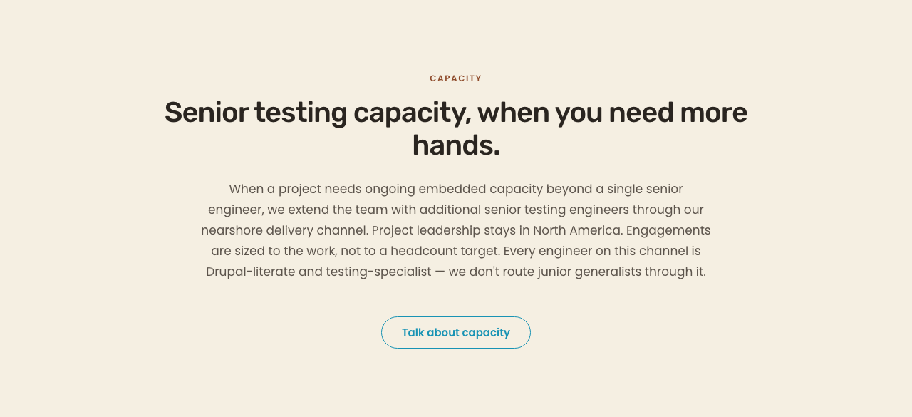
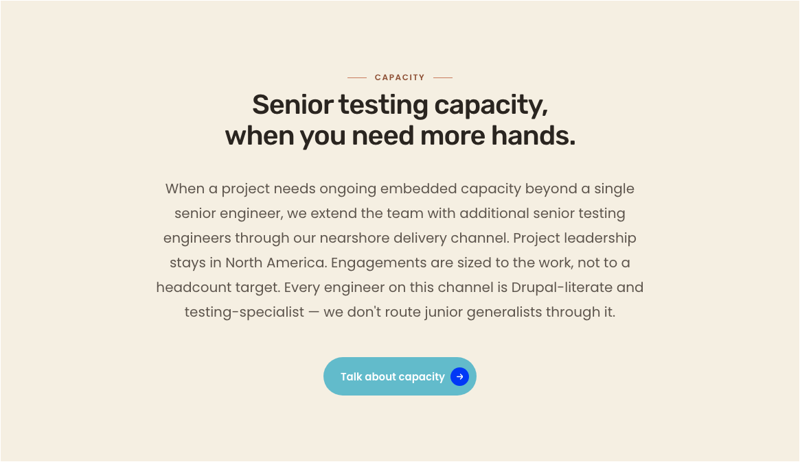
drag
← LIVEPREVIEW →
Diff PNG (red = pixel deltas)
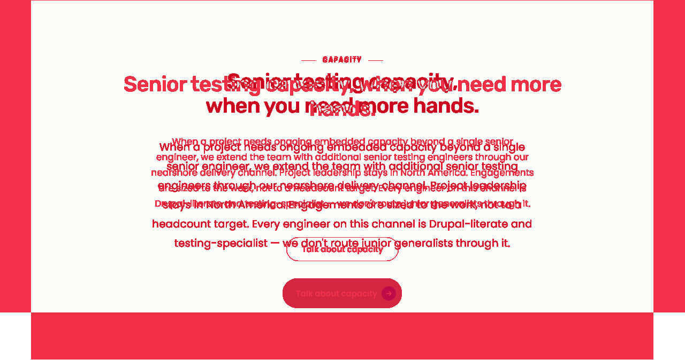
Side-by-side composite
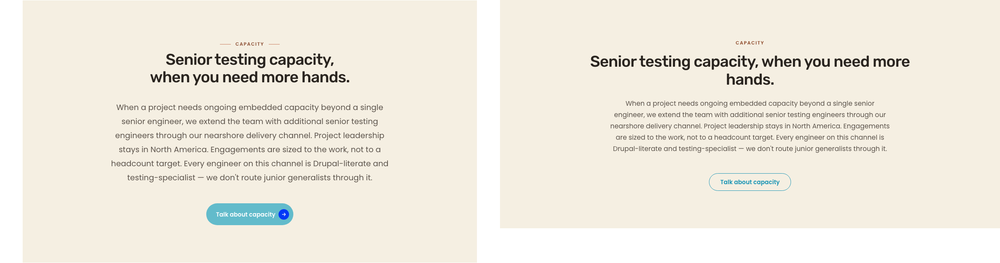
§ nearshore @ 768
Wipe-slider comparator
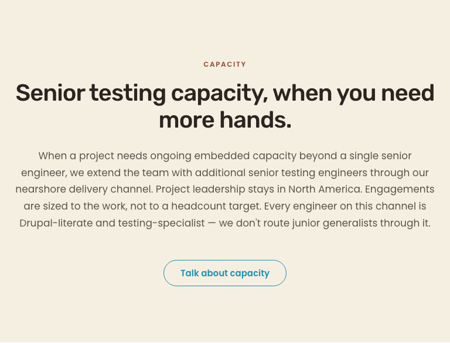
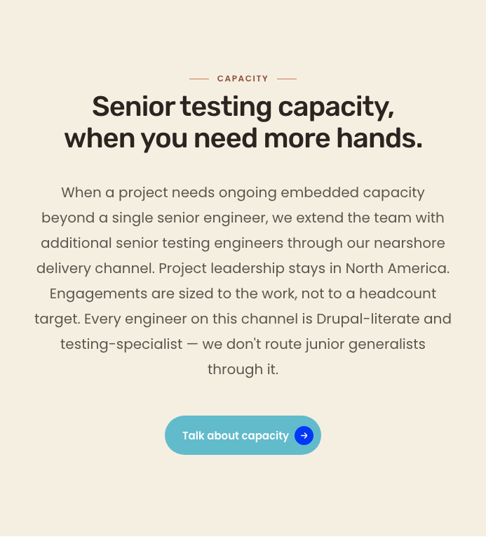
drag
← LIVEPREVIEW →
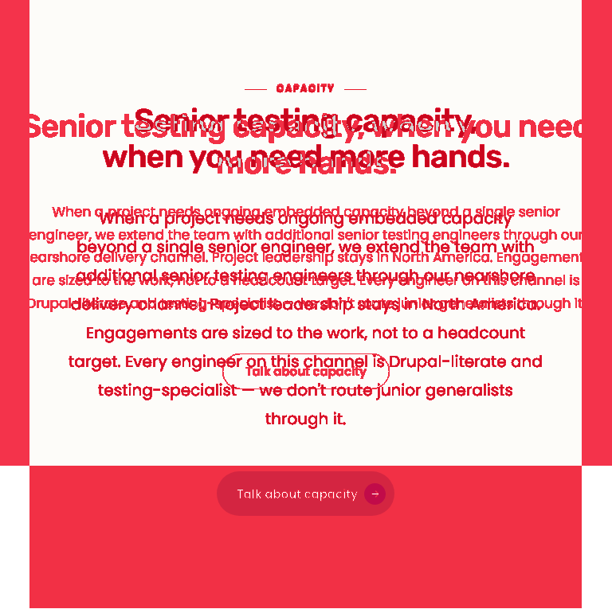
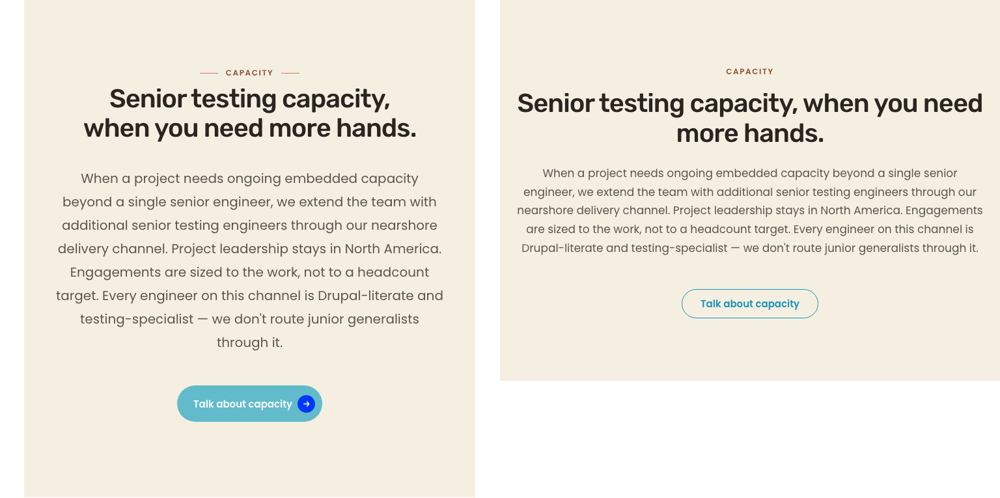
§ nearshore @ 375
Wipe-slider comparator
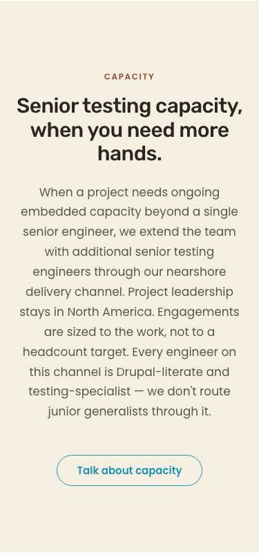
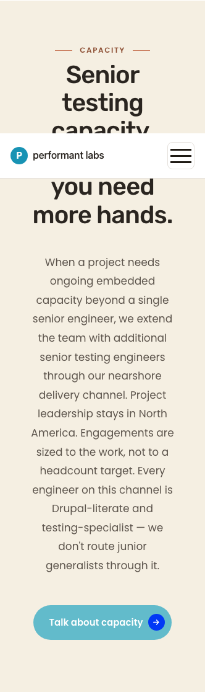
drag
← LIVEPREVIEW →
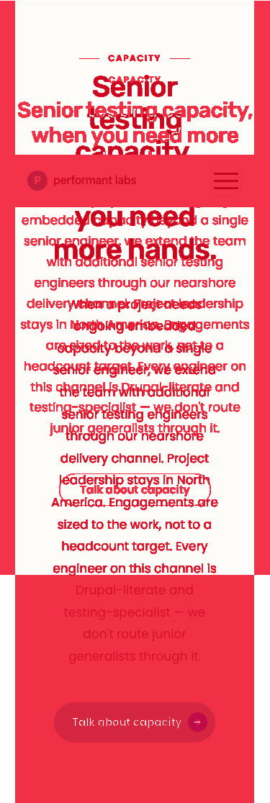
scrollWidth - clientWidth = 0.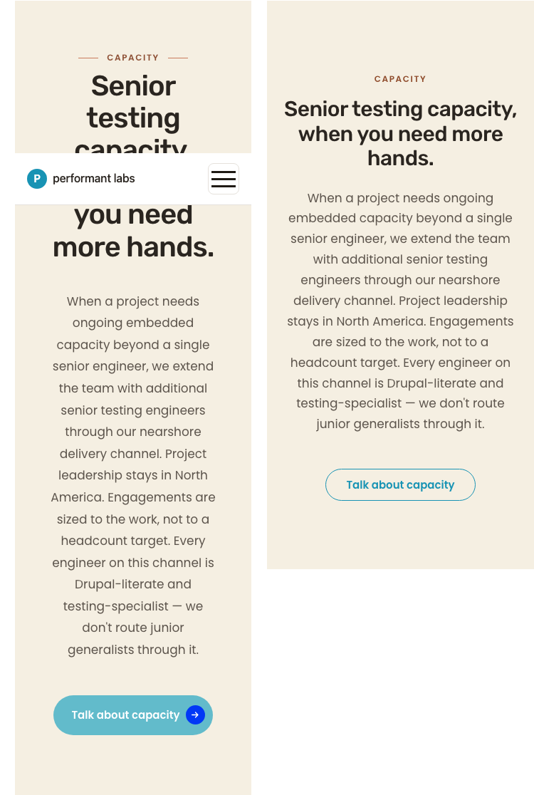
Per-section delta table
| Section | Viewport | Status | Description |
|---|---|---|---|
| § nearshore — H2 wrap | 1280 | PASS | Live wraps to 3+4-word balanced two-line pattern within 640 px cap. Preview shows orphan "hands." — live improves on preview per no-orphan-words rule. |
| § nearshore — body wrap | 1280 | MATCH | Both centered within ~720 px column. |
| § nearshore — H2 + body | 768 | MATCH | Unchanged from prior cycles; balanced wrap; no clipping. |
| § nearshore — H2 + body | 375 | MATCH | Unchanged from prior cycles; mobile typography stack; no horizontal scroll. |
| CTA pill style | all | DELTA (out of scope) | Live = filled cyan; preview = outlined teal. Pre-existing accepted deviation. |
| Section vertical padding | all | DELTA (out of scope) | Live uses dy-section default padding-block; preview is bare section. Pre-existing. |
| Other dy-section instances | all | NO REGRESSION | Marker class on exactly 1 of 6 sections on /services; 0 on / and /about-us. |
Full-page reference screenshots
1280 — full live

1280 — full preview
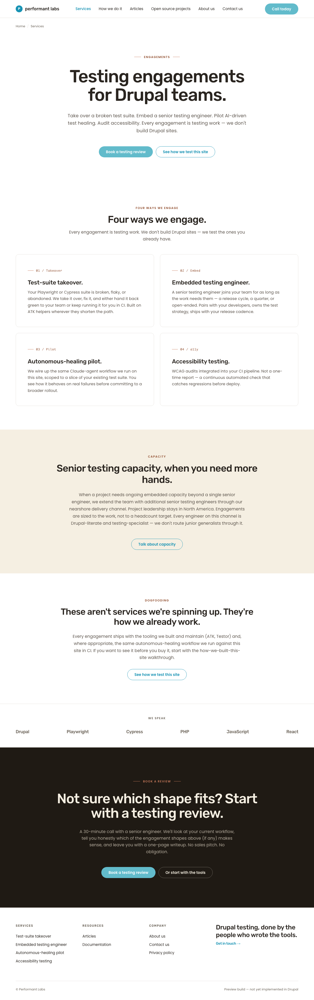
768 — full live / preview


375 — full live / preview